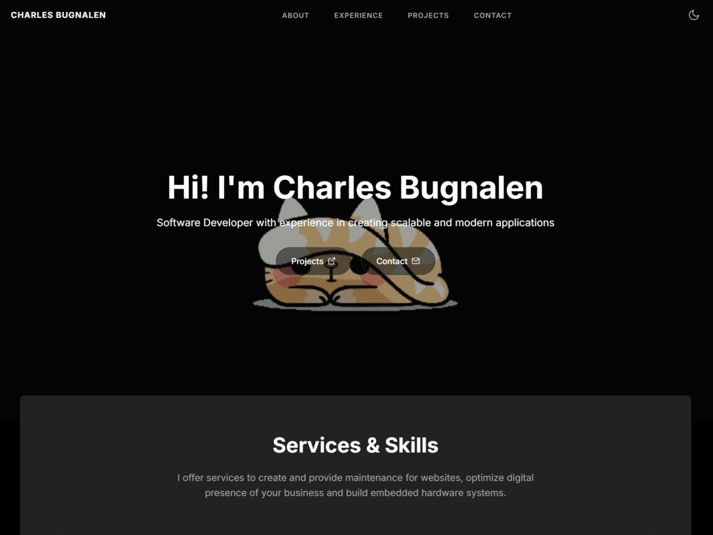
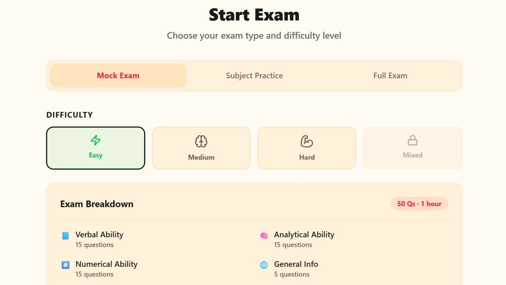

Projects
Explore some of my recent work. Includes academic thesis work, web applications, and personal projects.


Explore some of my recent work. Includes academic thesis work, web applications, and personal projects.

